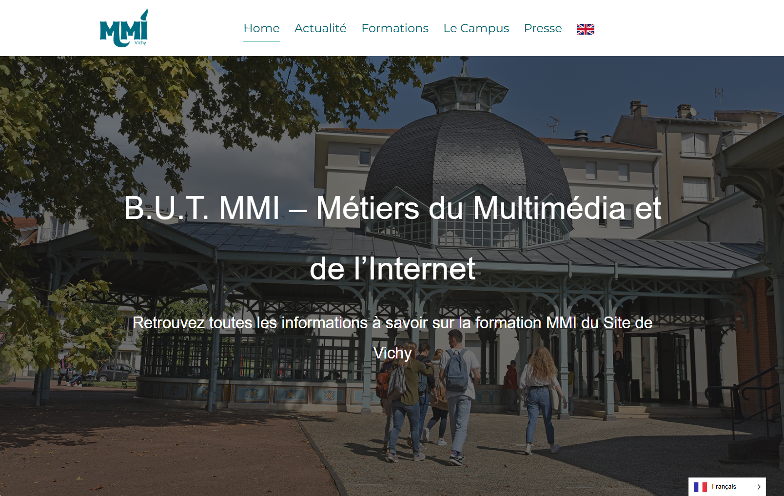

Site Web - BUT des métiers du multimédia et d'internet
Dans le cadre d’un projet academique visant a augmenter l'attractivité de l'IUT de Vichy, j’ai travaillé sur un site web en équipe. L'objectif etait d'attirer et d'introduire aux lycées le cursus du BUT des métiers multimédia. J'ai nottament travaillé personellement sur le site web, la production et le montage d'interview ainsi que le logo du site web. Un projet qui fut enrichissant pour moi niveau pratique et élaboration de solutions ! je vous laisse découvrir mes travaux ci-dessous :
01. Identité Visuelle


02. Création Vidéo / interview
🎥 Vidéo d'introduction du cursus MMI
🎥Interview
🎥Interview
🎥Interview
03. Expérience Digitale

Conception & Développement Web
HTML / CSS / Bootstrap / JavaScript
Réalisation d'une interface responsive et optimisée pour une expérience utilisateur fluide. J'ai travaillé sur l'ergonomie et l'accessibilité du site.